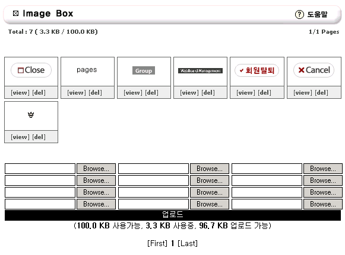
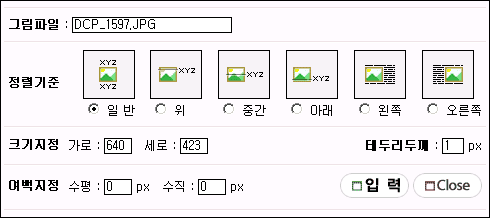
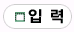

|
그림 창고 (Image Box) 기능 6. 제로보드 4.1 부터 추가된 기능입니다. 6. 기존의 게시판등의 CGI에 게시물을 작성할 때 이미지는 다른 계정에 올려서 링크하는 방식을 6. 일반적으로 이용하였습니다. 6. 제로보드에서는 가입된 회원중 Image Box 권한이 있는 회원에 대해서는 Image Box 기능이 있습니다. 6. 이 기능은 서버에 게시물에 관련된 이미지를 올려서 게시물 내용중 원하는 곳에 입력 및 편집을 6. 할수 있는 기능입니다. 6. 참고로 이 기능은 글쓰기 할 때만 나타나며 기존 스킨에는 포함되어 있지 않습니다. 6. 기존 스킨에 이 기능을 추가하실때에는 스킨 파일의 write.php 파일에 다음과 같은 문구를 원하는 곳에 6. 입력하세요. 6. <?=$a_imagebox?>Image Box</a> 6. 그럼 버튼이 나타날것입니다. 6. 제로보드 4.1의 기본스킨에는 이미 적용되어 있습니다. 6. 다음은 이미지 박스의 모습입니다.  6. 새창으로 뜨며 관리자가 허용한 용량내에서 사진 자료(gif, jpg)를 업로드 합니다. 6. 기본 용량은 100Kbyte 이며 해당 게시판에 사용 허가가 되어 있어야 합니다. 6. [view] 버튼은 올려진 그림의 원래 크기로 보는 기능이며, 6. [del] 버튼은 삭제 버튼입니다. 6. 버튼에 마우스를 올려 놓으면 Image Box에 대한 설명이 나타납니다. 6. 그럼 창고에 올려진 이미지를 게시물에 입력하는 방법에 대해서 알아보겠습니다. 6. 올려진 이미지중 원하는 그림을 클릭하면 다음과 같은 화면이 생깁니다.  6. 선택된 그림에 대해서 정렬, 테두리, 크기, 여백을 지정할수 있습니다. 6. 이것을 지정한후  버튼을 누르면 글쓰기 창에 다음의 형태로 약어가 삽입이 됩니다. 6. [img:DCP_1597.JPG,align=,width=640,height=423,vspace=0,hspace=0,border=1] 6. 제로보드는 이 약어를 통해서 글쓴이의 이미지 창고에서 해당 이미지를 정해진 위치에 삽입을 6. 하는 것입니다. 6. 단 이 약어는 해당 글쓰기 폼의 제일 아래에 추가가 된다는 것을 유의해주세요. 6. 만약 이미지의 위치를 변경하려면 위의 약어를 복사해서 원하는 위치에 붙이시면 됩니다. 6. 스터디 게시물등을 작성할때 매우 유용하게 사용될수 있으며, 타 계정이 아닌 사이트의 계정에 6. 직접 자료가 있으므로 안전합니다. 6. 다만, 불량회원들이 링크용으로 이미지를 사용할 여지가 많으므로 각별히 관리를 조심하여야 합니다. 6. 회원들은 Image Box 를 사용시 미리 보기에 적용하여 미리 보면 확실히 편집을 할수 있습니다. |